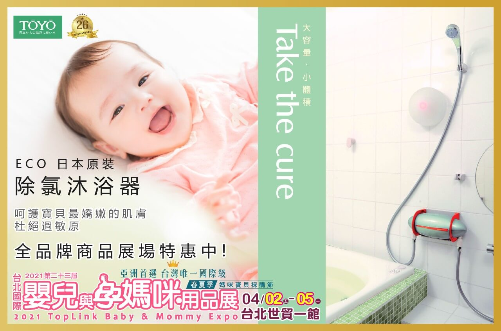
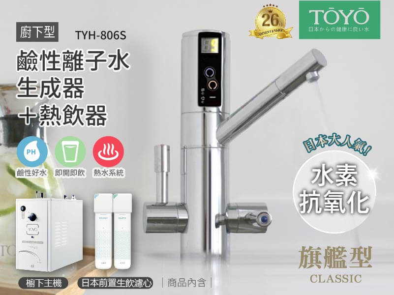

2021-03-20
【4月兒童節連假首選》台北世貿婦幼展 免費索票
【台北世貿婦幼展】
展場特惠組! 贈送萬元家電! 歡迎前往現場體驗
★展覽資訊 ★
【 2021台北國際嬰兒與孕媽咪用品展 】
展出地點：台北世貿一館
攤位號碼：C814
展出日期：2021/04/02(五) 至 2021/04/05(一)
展出時間：10:00-18:00
★免費索票 ★
TOYO團隊將在展區為水友們服務，歡迎前往唷！
攤位號碼：C814
✅ 快加入官方LINE 連結: https://lin.ee/8x7tX1r
加入後留言一句 「我想參加台北婦幼展」
將會由客服人員提供免費票券!
✅ 免付費客服諮詢 0800-090881
★ 超多優惠+萬元贈品 ★ 展場優惠價歡迎詢問!
ECO 日本原裝除氯沐浴器 – 呵護寶貝最嬌嫩的肌膚，杜絕過敏原
下雙溫熱飲機 – 熱水一開就有，沖泡牛奶最方便!
櫥下型鹼性離子水生成器+熱飲系統–
可飲用淨水、養生保健pH9.0鹼性水、熱水，一機符合全家人的生活需求!
